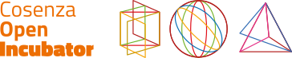
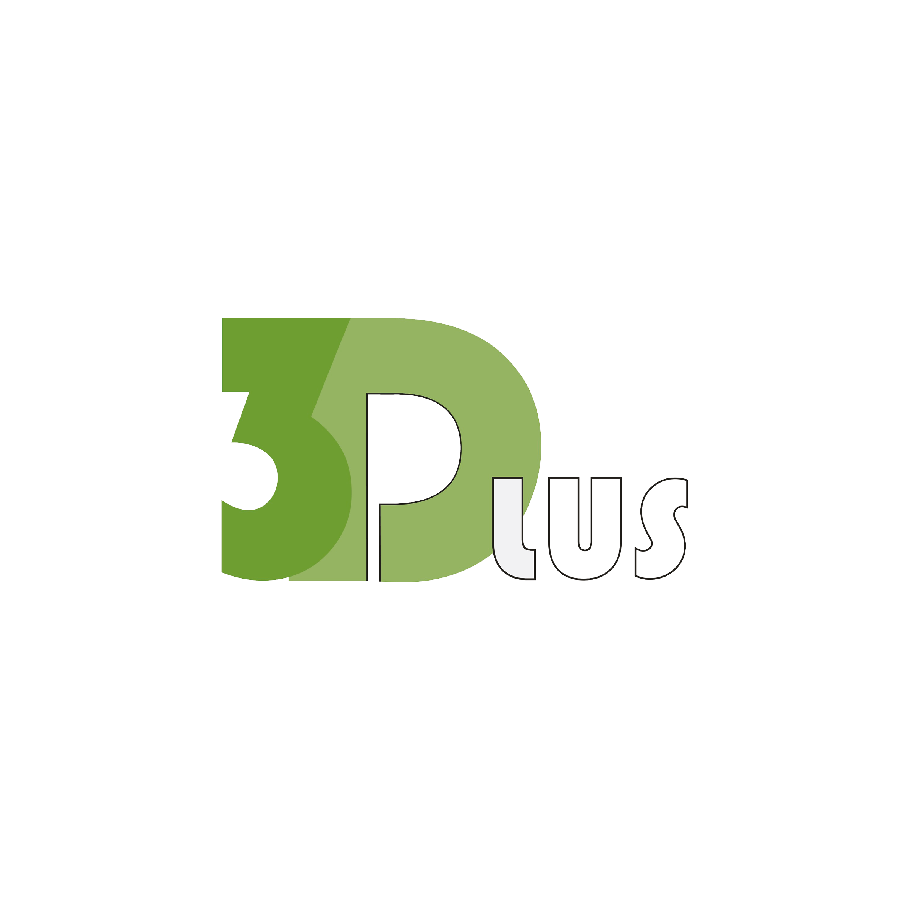
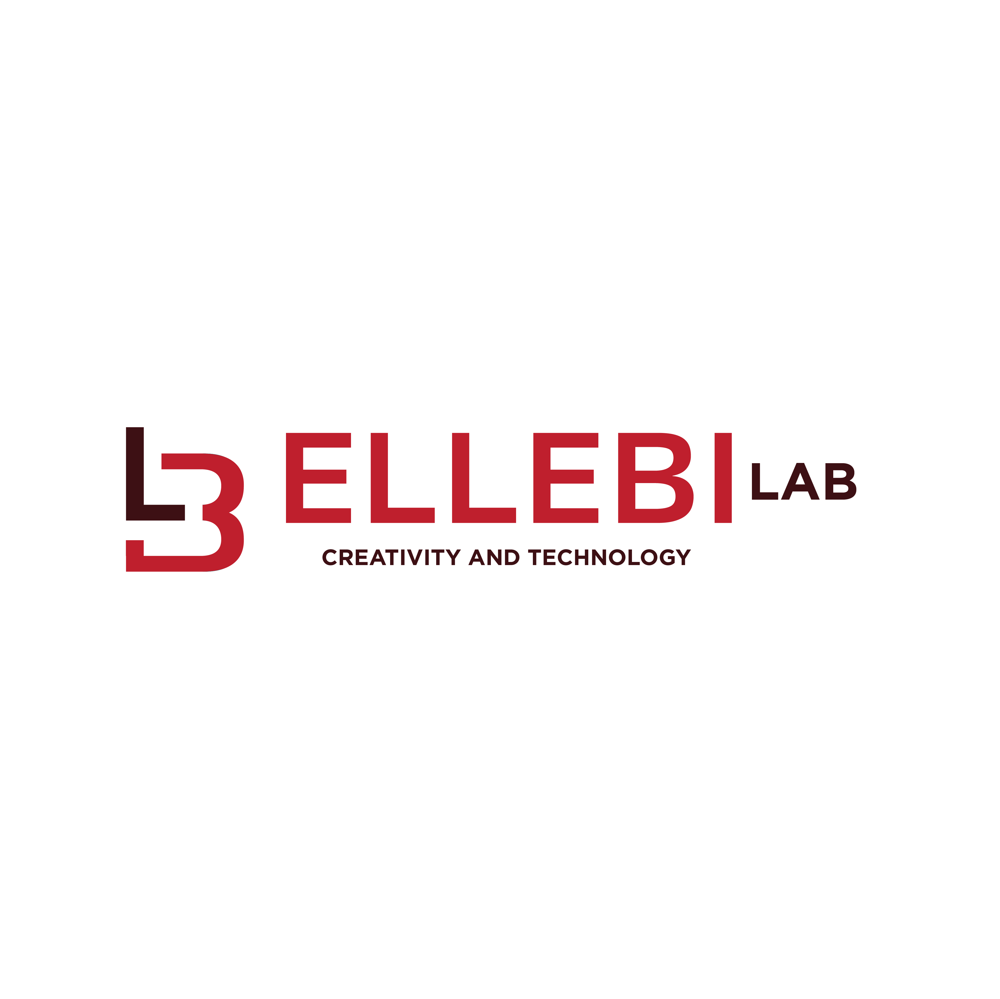
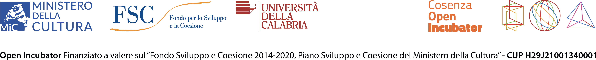

Un centro storico da scoprire, amare, raccontare
Il laboratorio narrativo nel cuore di Cosenza si arricchisce di altri due giorni per scoprire, documentare e raccontare il centro storico.
" Si può vivere un viaggio anche in 1000 metri di strada: ciò che conta è la qualità dello sguardo "
Open Cosenza coinvolge due anime: chi racconta e chi si racconta
L'esperienza è aperta a tutti, che tu sia un professionista della comunicazione oppure un semplice visitatore del Centro Storico, aderisci all’iniziativa e gioca alla scoperta di Cosenza.
Parteciperai al primo gioco di comunità nel Centro Storico di Cosenza, un’esperienza urbana che unisce cammino, scoperta, cultura locale e interazione con le attività del territorio.
Partendo da Piazza Valdesi, da Villa Vecchia o da uno dei punti indicati nel percorso, potrai attraversare Corso Telesio e le vie limitrofe alla scoperta di botteghe, luoghi storici, attività commerciali e servizi locali.
Durante il percorso dovrai osservare, ascoltare, raccogliere indizi, rispondere ai quiz e completare le tappe previste. Ogni visita ti permetterà di accumulare punti e partecipare alla possibilità di vincere premi, buoni sconto o vantaggi offerti dalle attività aderenti.
Il COI Walking Game è pensato come un’esperienza lenta, curiosa e partecipativa. Non si tratta solo di camminare, ma di entrare in relazione con il centro storico e con chi lo vive ogni giorno.
Il tour richiede:
Invitiamo a partecipare:
Aderendo al percorso:
Per partecipare:
Due giorni per immergersi nel cuore pulsante di Cosenza, scoprire storie autentiche e lasciarsi ispirare dall'anima del centro storico
Durante Open Cosenza avrai l'opportunità di vivere un'esperienza e produrre contenuti originali che contribuiranno alla valorizzazione del centro storico di Cosenza.
Inoltre parteciperai al primo Gioco di Comunità, che potrà farti vincere premi e buoni sconto nelle attività commerciali coinvolte.
Se usi i social entra nella comunità, mostraci la tua esperienza @OpenCosenza @cosenzaOpenIncubator @ComunediCosenza.
Le aziende incubate dal Cosenza Open Incubator hanno contribuito a creare esperienze uniche per scoprire il centro storico

Un itinerario alla scoperta delle radici romane di Cosenza, attraverso QR Code che attivano contenuti audio e fotografici originali. Un viaggio nelle stratificazioni della città, tra archeologia visibile e memoria nascosta.
Un itinerario breve e inclusivo che permette di scoprire il centro storico attraverso contenuti audio e testuali attivabili semplicemente avvicinandosi ai QR NaviLens. Ogni tappa offre una piccola storia, una descrizione sensoriale o un orientamento utile per muoversi tra piazze, botteghe e luoghi simbolici della città.

Un percorso che intreccia design contemporaneo e botteghe del centro storico: oggetti realizzati da artisti e artigiani dialogano con i luoghi che li ospitano, rivelando una Cosenza fatta di creatività, collaborazioni e storie materiali.
Cosenza Open Incubator
Palazzo Spadafora - Vico San Tommaso
Registrati tramite il modulo online entro il 27 maggio. Le candidature saranno valutate per garantire coerenza con il progetto.
L'evento si terrà venerdì 29 maggio e sabato 30 maggio. È consigliato partecipare ad entrambe le giornate.
Esplorerai in autonomia, rispettando residenti e attività. Uso responsabile di foto e video. Libertà creativa totale.
I contenuti prodotti possono essere pubblicati sui tuoi canali e dovranno essere condivisi per l'evento finale.
Rispetto, ascolto, responsabilità narrativa e impegno verso la qualità professionale.
Un progetto breve nella distanza, ma profondo nella visione. Una chiamata di responsabilità, di sguardo e di presenza.
Puoi decidere di iscriverti e avere maggiori informazioni o partecipare in modo anonimo. Se partecipi all’attività @OpenCosenza, ricorda di iscriverti alla webapp e usa @OpenCosenza, @CosenzaOpenIncubator @ComunediCosenza per animare i nostri social.
Iscriviti come Visitatore →Botteghe, laboratori, attività commerciali e culturali del centro storico: manifesta il tuo interesse per essere inclusa nel percorso di Open Cosenza.
Aderisci come Azienda →Scadenza iscrizioni: 27 Maggio 2026
Cosenza Open Incubator è l'incubatore di imprese culturali e turistiche che l'Università della Calabria ha realizzato nel Centro Storico di Cosenza, grazie al finanziamento del Ministero della Cultura a valere sul Fondo Sviluppo e Coesione 2014-2020, Piano Sviluppo e Coesione del Ministero della cultura.
L'incubatore mira a rafforzare la capacità delle imprese di realizzare uno o più prodotti, consolidare sinergie e contribuire alla crescita del tessuto economico del Centro storico di Cosenza.
